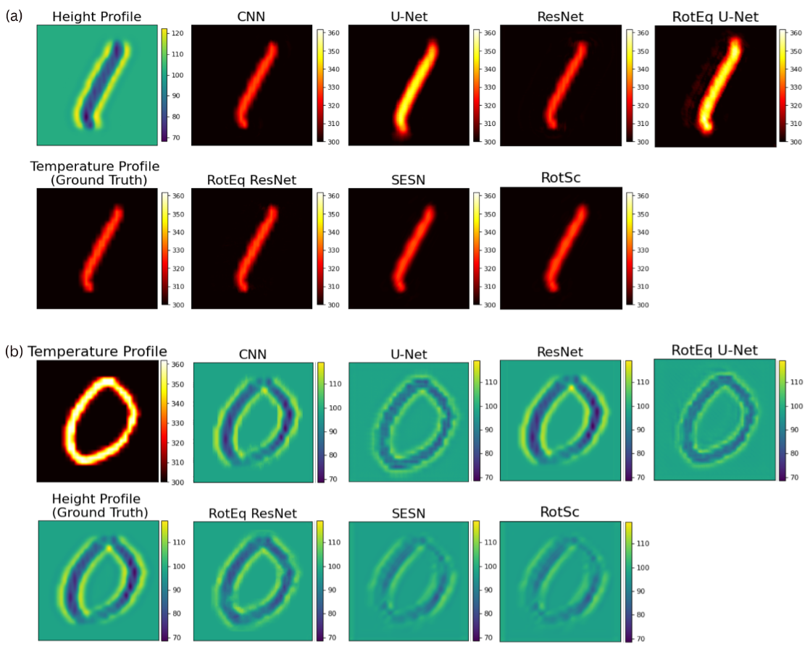

Research
My research interests span from development of new machine learning and deep learning models to applications of the models to a diverse set of applications in science and engineering. I've previously worked on:
1. Development and applications of equivariant neural networks for various applications.
2. Development and applications of ML models for healthcare applications, primarily cardiovascular field.
3. Development and applications of RAGs, GANs, and NLP systems.
Research Experience
CarDS Lab, Yale University
Data Scientist, New Haven, CT
May 2023 - Present
As a Data Scientist at the Cardiovascular Data Science Lab, Yale University, I leverage machine learning and natural language processing to advance cardiovascular data science research. My work encompasses diverse research projects, including Generative Adversarial Networks (GANs) for synthetic data generation, Retrieval-Augmented Generation (RAG) methods, and machine learning models for ECG image analysis. In addition to research, I build robust data infrastructures, including data architecture, mobile applications, and websites, to recruit research participants and deploy models on publicly accessible platforms.
PI: Dr. Rohan Khera
Geometric Learning Lab, Northeastern University
Research Fellow, Boston, MA
Aug 2022 - Sep 2023
As a part of the Khoury Research Apprenticeship Program in Fall 2022 and Spring 2023, I focused on applying Geometric Deep Learning and Equivariant Neural Networks to fluid mechanics and material sciences. My research involved analyzing the symmetries inherent in fluid dynamics and optics, and developing scale, translation, and rotation symmetric equivariant neural networks that integrates physical priors, enhancing physical realism and data efficiency.
Cybersecurity and Privacy Institute, Northeastern University
Research Assistant, Boston, MA
Jan 2022 - Dec 2022
Designed, collected, and analyzed Internet measurement campaigns to illuminate data localization practices in the European Union. Also implemented proof-of-concept models for various research papers and developed machine learning models to predict the physical locations of IP addresses.
PI: Dr. David Choffnes, Advisor: Dr. Alexander Gamero Garrido
Publications and Pre-Prints
2024
2024
2024
2024
-
Under Review - JIMMI Equivariant Neural Networks for Controlling Dynamic Spatial Light Modulators